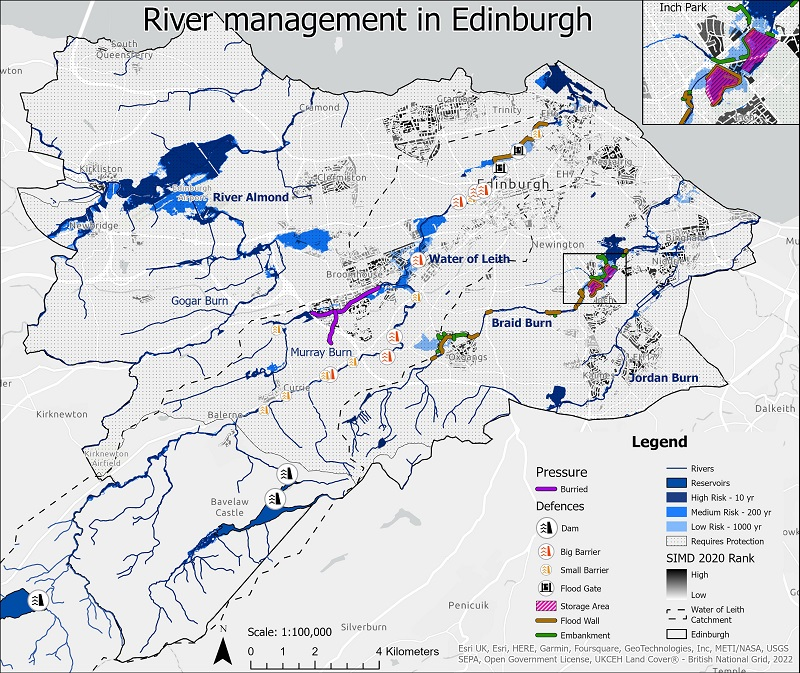
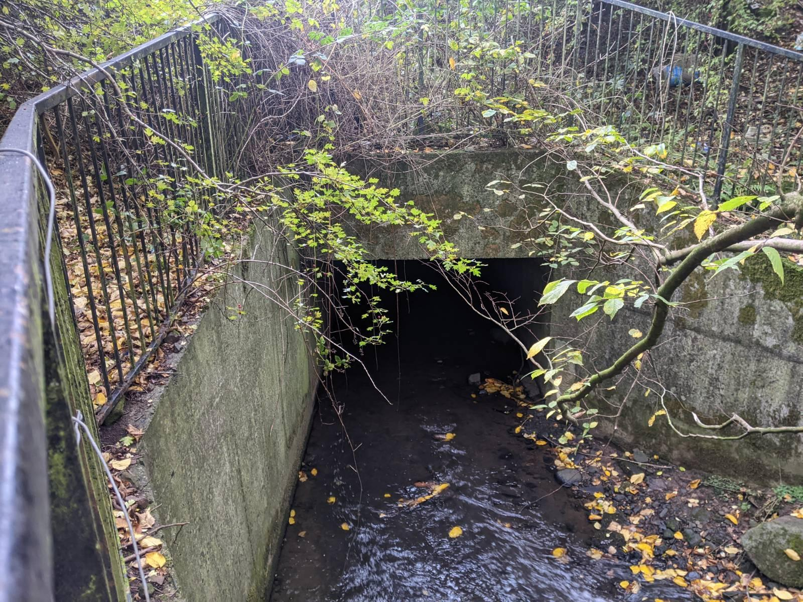
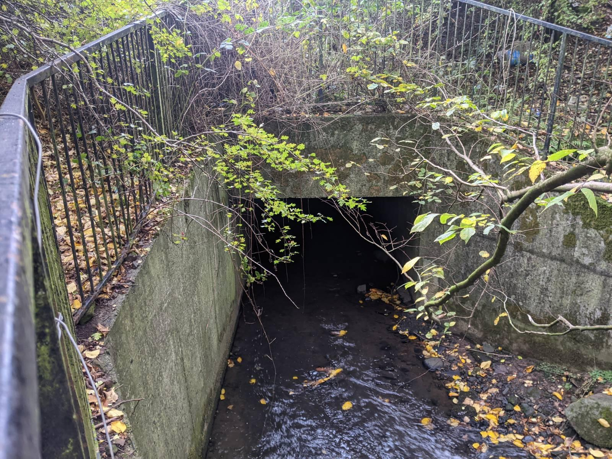

River Management
Barrier

Culvier
Wall

Have a look at the slides
The April 2000 flood demonstrated how ill prepared Edinburgh is for extreme weather events brought on byClimate Change. Due to the failure of traditional structures there has been a move towards natural defences. Natural river and flood management encourages a natural flow of the river and storage ofwater in plains, while also increasing water infiltration, but these strategies require a large amount of space. Steps have been taken to introduce defences at Scottish Environmental Protection Agency (SEPA) suggested opportunity sites, but many of these have missed the opportunity to create valuable green spaces for deprived communities.
By putting more weight on deprivation, this report sets out to find a new location of opportunity along theWater of Leith, which covers the areas under most flood threat in Edinburgh. Due to the limitation of generalised models, the environmental deprivation model used here focuses on freely accessible green spaces when using the Accessible Natural Greenspace Standards, and the social deprivation model combines the Scottish Index of Multiple Deprivation (SIMD) with the 20-minute neighbourhood concept to better reflect deprived areas. This resulted in the selection of the Murray Burn at Hermiston, as opportune site. Finally there is a proposal of how this site could be transformed to best suit flood management and users, and an evaluation of it.
This report uses detailed deprivation models to propose the restoration of the Murray Burn location, to improve flood management and reduce local deprivation.
Barrier
Culvier
Wall